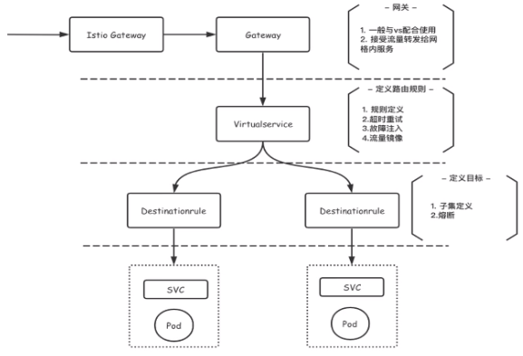

# Architecture
新的 Mixer 模型使用 Envoy 中的扩展来提供更多功能。Istio 社区正在领导 Envoy 的 WebAssembly（Wasm）运行时的实现，Wasm 让我们可以使用超过 20 种的语言来开发模块化、沙盒化的扩展。可以在代理继续提供流量的同时动态加载、重载扩展
通过 preview 配置文件安装 Istio 1.5 不会再安装 Mixer
如果有需要，您可以保持安装并启用 Mixer。最终，Mixer 将成为 Istio 单独的发行组件，成为 istio-ecosystem 的一部分
简化其余控制平面的 deployment。为此，我们将几个控制平面组件合并为一个组件：Istiod。该二进制文件包括 Pilot、Citadel、Galley 和 Sidecar 注入器的功能。这种方法从许多方面改善了 Istio 的安装和管理，降低了安装和配置的复杂性、维护工作量以及问题诊断时间，同时提高了响应速度。 关于 Istiod 的更多内容请查看 Christian Posta 的这篇博客.
Istiod 作为 1.5 中所有配置文件的默认配置
从图片来看，我们正在从这里：
迁移到这里：
2020 年，我们将继续专注于普及，实现默认 零配置 的目标，该默认设置不需要您更改应用程序的任何配置即可使用 Istio 的大多数功能。

# Security Policy

# AuthorizationPolicy
授权认证，精细化管理网格内的服务可以被哪些服务访问
- From - 来源：指定从哪里来的服务可以访问此由 Label Selector 指定的服务
- To - 操作：能访问到哪些路径，如使用 get 方法，Path 路径等
- When- 条件：当满足某条件的时候可以访问服务
$ cat mtls-auth.yaml | |
apiVersion: security.istio.io/v1beta1 | |
kind: AuthorizationPolicy | |
metadata: | |
name: box-nginx | |
namespace: rancher | |
spec: | |
action: ALLOW | |
selector: | |
matchLabels: | |
app: nginx-primary | |
rules: | |
- from: | |
- source: //包括principals, host主机, IP等等更细致话配置 | |
principals: ["cluster.local/ns/rancher/sa/box"] // 指定从namespace:rancher, serviceAccount:box 的服务可以访问标签为app=nginx-primary的服务 |
# PeerAuthentication
对等授权认证，三种模式:
- PERMISSIVE - 宽容 (default, 服务间正常访问)
- STRICT - 严格 (网格内服务启用 mtls)
- DISABLE - 取消网格内的 mtls
$ cat peer.yaml | |
apiVersion: security.istio.io/v1beta1 | |
kind: PeerAuthentication | |
metadata: | |
name: rancher-policy | |
namespace: rancher | |
spec: | |
mtls: | |
mode: STRICT // 网格内服务必须经过mtls双向握手才能进行通信, 加强网格内服务安全性, 网格外服务是不会访问进来的 |
# RequestAuthentication JWT
# Official website demo bookinfo

# Gateway & VirtualService
apiVersion: networking.istio.io/v1alpha3 | |
kind: Gateway # 相当于外部服务要访问网格内服务的第二道大门, 第一道大门是istio默认的ingressgateway网关 | |
metadata: | |
name: bookinfo-gateway | |
spec: | |
selector: | |
istio: ingressgateway # use istio default controller | |
servers: | |
- port: | |
number: 80 # 定义一个80端口供别人访问, 并把80端口暴露到网关上面 | |
name: http | |
protocol: HTTP | |
hosts: # "*" 表示访问任何主机的80端口都映射都下面的VirtualService下的destination对应的productpage | |
- "*" # 也指定为"httpbin.example.com", 当访问此网址时去找对应的下面的VirtualService, 但需要做解析，否则浏览器无法访问得到. | |
--- # 解析方法: linux: 修改/etc/hosts, windows: 修改/Windows/System32/drivers/etc/hosts | |
# 添加内容: `Host-Name httpbin.example.com`， 浏览器就可输入http://httpbin.example.com/productpage/200, 然后鼠标右击->Inspect->Network->Headers， 刷新网页即可看到报头 | |
apiVersion: networking.istio.io/v1alpha3 | |
kind: VirtualService | |
metadata: | |
name: bookinfo | |
spec: # * 经常会跟Gateway一起使用. | |
hosts: # * 表示VirtualService对整个k8s可寻址的资源如Service,Ingress, 都使用同样的路由规则 | |
- "*" # 也指定为"httpbin.example.com", 与上面Gateway的hosts保持一致, 表示VirtualService的路由规则只适用于此流量可路由的域名资源httpbin.example.com. | |
gateways: | |
- bookinfo-gateway # 绑定上面Gateway, 从外部如浏览器可以访问如: curl -s http://ingressgateway-Host-IP:NodePortNumber/productpage | |
http: # 访问协议是http的时候才会进一步匹配 | |
- match: | |
- uri: | |
exact: /productpage | |
- uri: | |
prefix: /static | |
- uri: | |
exact: /login | |
- uri: | |
exact: /logout | |
- uri: | |
prefix: /api/v1/products | |
route: | |
- destination: | |
host: productpage # 匹配上面满足后路由到对应k8s部署的svc名字叫productpage的服务, 通过kubectl get svc -n book-info查看 | |
port: | |
number: 9080 # 路由到服务productpage的9080端口提供的服务 | |
route: # 上命没有匹配到默认到productpage service | |
- destination: | |
host: productpage | |
port: | |
number: 9080 |
VirtualService
apiVersion: networking.istio.io/v1alpha3 | |
kind: VirtualService | |
metadata: | |
name: reviews | |
spec: # 没有绑定gateway, 因此从外部还无法访问 | |
hosts: | |
- reviews | |
http: | |
- route: | |
- destination: | |
host: reviews | |
subset: v1 # 对应下名DestinationRule reviews中的name: v1 | |
weight: 80 # 路由权重 | |
- destination: | |
host: reviews | |
subset: v1 # 对应下名DestinationRule reviews中的name: v2 | |
weight: 20 |
# DestinationRule
apiVersion: networking.istio.io/v1alpha3 | |
kind: DestinationRule # 路由指向由host指定的svc下面通过Label selector包含的特定POD | |
metadata: | |
name: reviews | |
spec: | |
host: reviews # 对应k8s部署的svc名字叫productpage, kubectl get svc -n book-info | |
trafficPolicy: | |
loadBalancer: # 1.负载均衡 2.断路器 3.TLS 等等 | |
simple: RANDOM | |
tls: | |
mode: ISTIO_MUTUAL | |
subsets: | |
- name: v1 | |
labels: | |
version: v1 # 对应pod的Labels标签里有version=v1, 可通过kubectl describe po/reviews-** -n book-info查看Labels. | |
- name: v2 | |
labels: | |
version: v2 | |
- name: v3 | |
labels: | |
version: v3 |
通过网关访问服务:
$ curl -I -HHost:httpbin.example.com http://$INGRESS_HOST:$INGRESS_PORT/productpage/200 | |
上面命令将浏览器访问http://httpbin.example.com/producpage 对应的解析为 http://$INGRESS_HOST:$INGRESS_PORT/productpage/200 | |
这里-H选项是设置主机的HTTP报头为httpbin.example.com |
# Dashboard & log
Official website: https://istio.io/latest/docs/tasks/observability/distributed-tracing/
# Dashboard Overall
controlz: 日志，也可用 kubectl logs 查看不过不够直观
envoy
grafana
jaeger: 查看 traces
kiali: 服务网格的可视化展示
prometheus
zipkin: 查看 traces
查询 istio 提供了哪些 dashboard
$ istioctl dashboard |
查看或修改指定 pod 的 log
$ istioctl dashboard controlz istiod-5f47bf5895-lzm6w -n istio-system | |
$ istioctl dashboard controlz istiod-5f47bf5895-lzm6w -n istio-system --address=192.168.22.184 // 添加了address监听地址 | |
http://localhost:40230 |
然后浏览器输入 http://localhost:40230 就可看到 log 信息
查看 envoy dashboard, 前提是跑业务的 pod 中部署了 envoy proxy
$ istioctl dashboard envoy prometheus-xxx -n istio-system | |
$ istioctl dashboard envoy prometheus-xxx -n istio-system --address=192.168.22.184 |
# log
查看某个 pod 日志
$ kubectl logs po/XXX -n Namespace |
修改整个 istio 的日志模式
$ kubectl edit cm istio -n istio-system | |
...... | |
data: | |
mesh: |- | |
accessLogEncoding: TEXT // 日志默认是TEXT格式输出，可以改为json模式, 再序列话可以很直观查看进出istio envoy的流量的方向, 上下流等. |
# kiali
$ istioctl dashboard kiali | |
$ while true; do curl http://10.239.186.141/productpage; done; |
# jaeger
kubectl apply -f samples/addons/jaeger.yaml -n istio-system | |
istioctl dashboard jaeger |
# zipkin
kubectl apply -f samples/addons/extras/zipkin.yaml -n istio-system | |
istioctl dashboard zipkin |